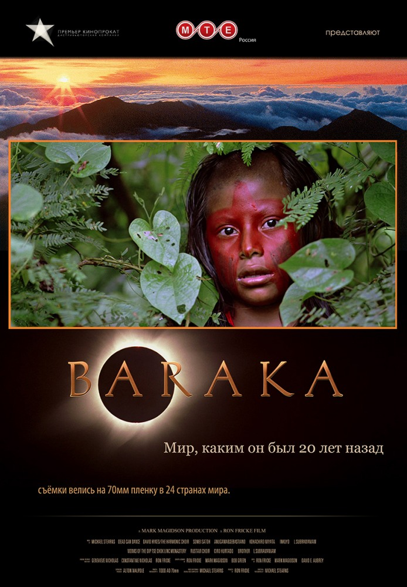

Дом. История путешествия
Фильм демонстрирует нам красоту планеты и последствия разрушений, нанесенных деятельностью человека. Незаживающие шрамы, нанесенные Земле промышленными производствами, последствия войн, экологических катастроф, раскрывают зрителю реальную ситуацию на планете.
Планета-океан
Фильм призван объяснить некоторые из величайших природных загадок нашей планеты и ещё ярче показать важность того, чтобы человечество училось жить в гармонии с океаном.

Барака
Фильм, создававшийся в течение 14 месяцев в 24 странах мира. В картине отсутствуют диалоги, закадровый голос, привычный сюжет. Последовательность кадров в сочетании с специально написанной для фильма музыкой погружают зрителя и создают непрерывную повествовательную цепочку, раскрывают на экране целый мир. Кадры самых отдаленных мест на планете и промышленных объектов, смыслы, рождающиеся на стыке культур, мысли, высказанные исключительно кинематографическими средствами.
Мир глазами двадцатилетней давности. Мир, который уже остался в прошлом.
Человек
Огромное кинополотно, собравшее рассказы 2 тысяч людей из 60 стран мира, возможно, не ответит на вопрос «Что делает нас людьми?», но является отправной точкой для диалога на эту тему.
Космос: Пространство и время (мини-сериал)
Сериал, в котором будут представлены научные открытия совершенные за последние десятилетия.
 Корзина
Корзина